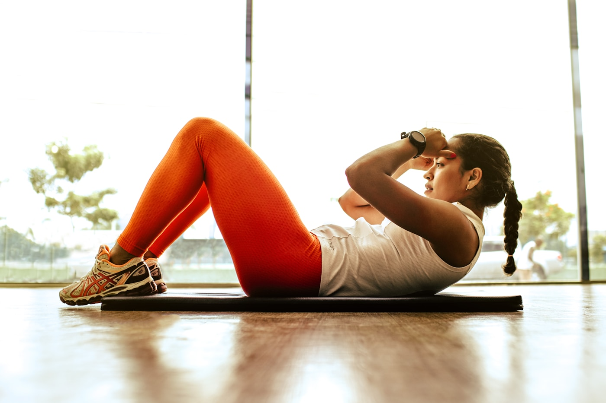

Atendimento individualizado
Cuidado pensado de acordo com as necessidades de cada pessoa.
Fisioterapia · Pilates · Bem-estar
Cuidado personalizado para ajudar você a recuperar movimentos, aliviar dores e viver com mais qualidade.
Um espaço para cuidar do corpo com atenção, escuta e acolhimento.

Cuidado pensado para suas necessidades.
Saúde, movimento e bem-estar juntos.
Conforto em cada etapa do atendimento.
Sobre a Restore
A Clínica Restore nasceu para oferecer uma experiência de cuidado mais próxima, atenta e possível. Aqui, cada atendimento começa com escuta e consideração pela sua história.
Nosso propósito é apoiar seu movimento, sua recuperação e seu bem-estar com serviços que se complementam e profissionais preparados para acompanhar o seu momento.
Espaço reservado para apresentar profissionais, formações, especialidades e registros após confirmação.
Nossos cuidados
Conheça nossos serviços e descubra como podemos ajudar.
Por que a Restore
Cuidado pensado de acordo com as necessidades de cada pessoa.
Diferentes serviços direcionados à saúde, movimento e bem-estar.
Uma experiência pensada para proporcionar conforto durante o atendimento.
Cuidado além do tratamento, buscando qualidade de vida.
Avaliações
A área está pronta para receber avaliações reais da clínica.
Placeholder reservado para nome, foto/avatar e comentário autorizado de pacientes.
Conheça a Restore
Cuidado em cada detalhe
Entre em contato com a Clínica Restore e conheça nossos atendimentos.
Falar com a Restore ↗Acompanhe a Clínica Restore
Veja novidades, bastidores e conteúdos de bem-estar no Instagram.
Vamos conversar?
Fale com a Clínica Restore para tirar dúvidas ou encontrar o atendimento mais adequado para você.
Onde estamos
Endereço, horários e mapa serão adicionados aqui assim que forem confirmados.
Comece a cuidar de você
Saiba qual atendimento pode ser mais adequado para você.
Agendar pelo WhatsApp ↗